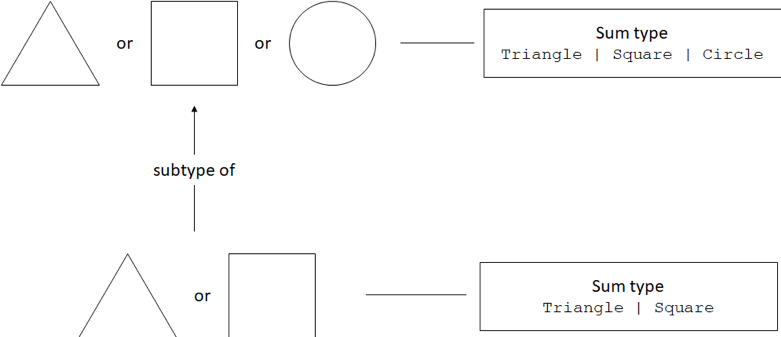
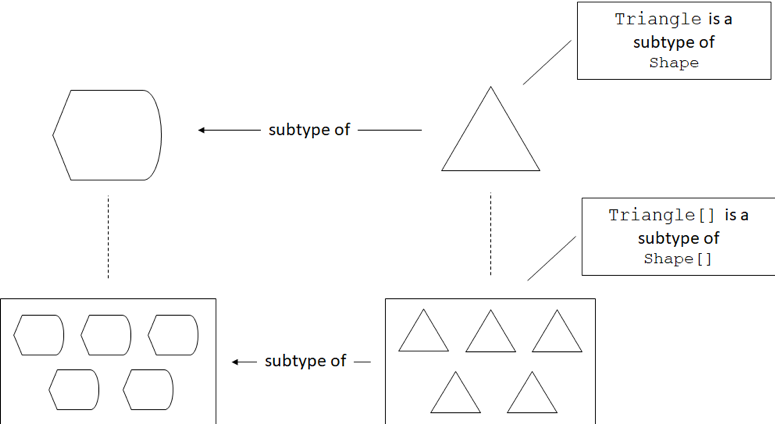
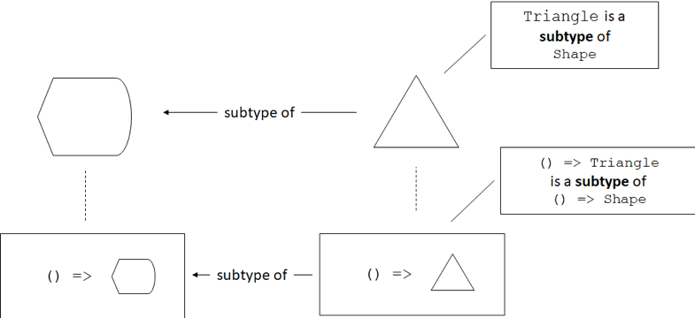
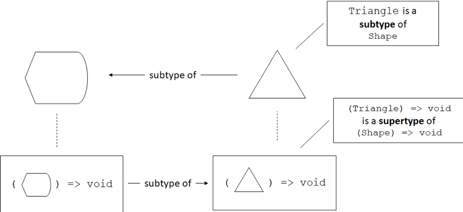
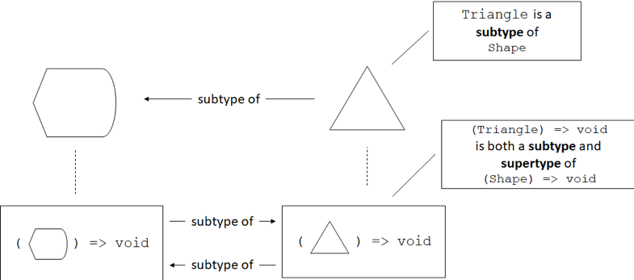

Variance
This blog post is an excerpt from my book, Programming with Types. The code samples are in TypeScript. If you enjoy the article, you can use the discount code vlri40 for a 40% discount on the book.
Subtyping Relationships
We know that if Triangle extends Shape, then Triangle is a subtype of Shape. Let’s try to answer a few trickier questions:
- What is the subtyping relationship between the sum types Triangle | Square and Triangle | Square | Circle?
- What is the subtyping relationship between an array of triangles (Triangle[]) and an array of shapes (Shape[])?
- What is the subtyping relationship between a generic data structure like List<T>, for List<Triangle> and List<Shape>?
- What about the function types () => Shape and () => Triangle?
- Conversely, what about the function type (argument: Shape) => void and the function type (argument: Triangle) => void?
These are important questions, as they tell us which of these types can be substituted for their subtypes. Whenever we see a function that expects an argument of one of these types, we should understand whether we can provide a subtype instead.
The challenge in the above examples is that things aren’t as straightforward as Triangle extends Shape. We are looking at types which are defined based on Triangle and Shape. Triangle and Shape are either part of the sum types, or the types of elements of a collection, or a function’s argument types or return types.
Subtyping and Sum Types
Let’s take the simplest example first, the sum type. Let’s say we have a draw() function which can draw a Triangle, a Square, or a Circle. Can we pass a Triangle or Square to it? As you might have guessed, the answer is “yes”. We can check that such code compiles:
declare const TriangleType: unique symbol;
class Triangle {
[TriangleType]: void;
/* Triangle members */
}
declare const SquareType: unique symbol;
class Square {
[SquareType]: void;
/* Square members */
}
declare const CircleType: unique symbol;
class Circle {
[CircleType]: void;
/* Circle members */
}
declare function makeShape(): Triangle | Square;
declare function draw(shape: Triangle | Square | Circle): void;
draw(makeShape());
makeShape() returns a Triangle or a Square while draw() accepts a Triangle, a Square or a Circle (implementations omitted).
We enforce nominal subtyping throughout these examples since we’re not providing full implementations for these types. In practice, they would have various different properties and methods to distinguish them. We simulate that with unique symbols for our examples, as leaving the classes empty would make all of them equivalent due to TypeScript’s structural subtyping.
As expected, this code compiles. The opposite doesn’t: if we can draw a Triangle or a Square and we attempt to draw a Triangle, Square, or Circle, the compiler will complain because we might end up passing a Circle to the draw() function, which wouldn’t know what to do with it. We can confirm that the below code doesn’t compile:
declare function makeShape(): Triangle | Square | Circle;
declare function draw(shape: Triangle | Square): void;
draw(makeShape());
We flipped the types so makeShape() could also return a Circle, while draw() no longer accepts a Circle. This no longer compiles.
This means that Triangle | Square is a subtype of Triangle | Square | Circle: we can always substitute a Triangle or Square for a Triangle, Square, or Circle, but not the other way around. This might seem counterintuitive, since Triangle | Square is “less” than Triangle | Square | Circle. Whenever we use inheritance, we end up with a subtype that has more properties than its supertype. For sum types it works the opposite way: the supertype has more types than the subtype.
Say we have an EquilateralTriangle which inherits from Triangle:
declare const EquilateralTriangleType: unique symbol;
class EquilateralTriangle extends Triangle {
[EquilateralTriangleType]: void;
/* EquilateralTriangle members */
}
As an exercise, check what happens when we mix sum types with inheritance. Does makeShape() returning EquilateralTriangle | Square and draw() accepting Triangle | Square | Circle work? What about makeShape() returning Triangle | Square and draw() accepting EquilateralTriangle | Square | Circle?
Subtyping and Collections
Now let’s look at types which contain a set of values of some other type. Let’s start with arrays: can we pass an array of Triangle objects to a draw() function which accepts an array of Shape objects, if Triangle is a subtype of Shape?
class Shape {
/* Shape members */
}
declare const TriangleType: unique symbol;
class Triangle extends Shape {
[TriangleType]: void;
/* Triangle members */
}
declare function makeTriangles(): Triangle[];
declare function draw(shapes: Shape[]): void;
draw(makeTriangles());
Triangle is a subtype of Shape. makeTriangles() returns an array of Triangle objects. draw() accepts an array of Shape objects. We can use an array of Triangle objects as an array of Shape objects
This might not be surprising, but it is an important observation: arrays preserve the subtyping relationship of the underlying types they are storing. As expected, the opposite doesn’t work: if we try to pass an array of Shape objects where an array of Triangle objects is expected, the code won’t compile.
Arrays are basic types that come out-of-the-box in many programming languages. What if we define a custom collection, say a LinkedList<T>?
class LinkedList<T> {
value: T;
next: LinkedList<T> | undefined = undefined;
constructor(value: T) {
this.value = value;
}
append(value: T): LinkedList<T> {
this.next = new LinkedList(value);
return this.next;
}
}
declare function makeTriangles(): LinkedList<Triangle>;
declare function draw(shapes: LinkedList<Shape>): void;
draw(makeTriangles());
LinkedList<T> is a generic linked list collection. makeTriangle() now returns a linked list of traingles. draw() accepts a linked list of shapes. This code compiles.
Even without an out-of-the-box type, TypeScript correctly establishes that LinkedList<Triangle> is a subtype of LinkedList<Shape>. Like before, the opposite doesn’t compile - we can’t pass a LinkedList<Shape> as a LinkedList<Triangle>.
Covariance
A type which preserves the subtyping relationship of its underlying type is called covariant. An array is covariant, because it preserves the subtyping relationship: Triangle is a subtype of Shape, so Triangle[] is a subtype of Shape[].
Various languages behave differently when dealing with arrays and collections like LinkedList<T>. For example, in C# we would have to explicitly state covariance for a type like LinkedList<T> by declaring an interface and using the out keyword (ILinkedList<out T>), otherwise the compiler will not deduce the subtyping relationship.
An alternative to covariance is to simply ignore the subtyping relationship between two given types and consider a LinkedList<Shape> and LinkedList<Triangle> as types with no subtyping relationship between them (neither is a subtype of the other). This is not the case in TypeScript, but it is in C#, where a List<Shape> and a List<Triangle> have no subtyping relationship.
Invariance
A type which ignores the subtyping relationship of its underlying type is called invariant. A C# List<T> is invariant, because it ignores the subtyping relationship “Triangle is a subtype of Shape”, so List<Shape> and List<Triangle> have no subtype-supertype relationship.
Now that we looked at how collections relate to each other in terms of subtyping and saw two common types of variance, let’s see how function types related to each other.
Subtyping and Function Return Types
We’ll start with the simpler case first: see what substitutions we can make between a function that returns a Triangle and a function that returns a Shape. We’ll declare two factory functions, a makeShape() which returns a Shape and a makeTriangle() which returns a Triangle.
We’ll then implement a useFactory() function which takes a function of type () => Shape as argument and returns a Shape. We’ll try passing makeTriangle() to it:
declare function makeTriangle(): Triangle;
declare function makeShape(): Shape;
function useFactory(factory: () => Shape): Shape {
return factory();
}
let shape1: Shape = useFactory(makeShape);
let shape2: Shape = useFactory(makeTriangle);
useFactory() takes a function with no arguments which returns a Shape and calls it. Both makeTriangle() and makeShape() can be used as arguments to useFactory().
Nothing out of the ordinary here: we can pass a function that returns a Triangle as a function that returns a Shape, because the return value (a Triangle) is a subtype of Shape, so we can assign it to a Shape.
The opposite doesn’t work: if we change our useFactory() to expect a () => Triangle argument and try to pass it makeShape(), the code won’t compile:
declare function makeTriangle(): Triangle;
declare function makeShape(): Shape;
function useFactory(factory: () => Triangle): Triangle {
return factory();
}
let shape1: Shape = useFactory(makeShape);
let shape2: Shape = useFactory(makeTriangle);
We replaced Shape with Triangle in the useFactory() definition. The code fails to compile: we can’t use makeShape() as a () => Triangle.
This is again pretty straightforward: we can’t use makeShape() as a function of type () => Triangle because makeShape() returns a Shape object. That object could be a Triangle, but it might be a Square. useFactory() promises to return a Triangle, so it can’t return a supertype of Triangle. It could, of course, return a subtype, like EquilateralTriangle, given a makeEquilateralTriangle().
Functions are covariant in their return types. In other words, if Triangle is a subtype of Shape, a function type like () => Triangle is a subtype of a function () => Shape. Note that the function types don’t have to describe functions that don’t take any arguments. If makeTriangle() and makeShape() both took a couple of number arguments, they would still be covariant as we just saw.
This is the behavior followed by most mainstream programming languages. The same rules are followed for overriding methods in inherited types, changing their return type. If we implement a ShapeMaker class which provides a make() method that returns a Shape, we can override it in a derived class TriangleMaker to return Triangle instead. The compiler will allow this, as calling either of the make() methods will give us a Shape object:
class ShapeMaker {
make(): Shape {
return new Shape();
}
}
class TriangleMaker extends ShapeMaker {
make(): Triangle {
return new Triangle();
}
}
This is, again, allowed behavior in most mainstream programming languages, as most consider functions covariant in their return type. Let’s now see what happens to function types whose argument types are subtypes of each other.
Subtyping and Function Argument Types
We’ll turn things inside out, so instead of a function that returns a Shape and a function that returns a Triangle, we’ll take a function that takes a Shape as argument and a function that takes a Triangle as argument. We’ll call these drawShape() and drawTriangle(). How do (argument: Shape) => void and (argument: Triangle) => void relate to one another?
Let’s introduce another function, render(), which takes as arguments a Triangle and an (argument: Triangle) => void function. It simply calls the given function with the given Triangle:
declare function drawShape(shape: Shape): void;
declare function drawTriangle(triangle: Triangle): void;
function render(
triangle: Triangle,
drawFunc: (argument: Triangle) => void): void {
drawFunc(triangle);
}
drawShape() takes a Shape argument, drawTriangle() takes a Triangle argument. render() expects a Triangle and a function that takes a Triangle as argument. render() simply calls the provided function passing it the triangle it received.
Here comes the interesting bit: in this case, we can safely pass drawShape() to the render() function! That means we can use a (argument: Shape) => void where an (argument: Triangle) => void is expected.
Logically it makes sense: we have a Triangle and we pass it to a drawing function which can use it as an argument. If the function itself expects a Triangle, like our drawTriangle() function, then of course it works. But it should also work for a function which expects a supertype of Triangle: drawShape() wants a shape - any shape - to draw. Since it doesn’t use anything that’s triangle-specific, it is more general than drawTriangle(), it can accept any shape as argument, be it Triangle or Square. So in this particular case, the subtyping relationship is reversed.
Contravariance
A type which reverses the subtyping relationship of its underlying type is called contravariant. In most programming languages, functions are contravariant with regards to their arguments. A function which expects a Triangle as argument can be substituted with a function which expects a Shape as argument. The relationship of the functions is the reverse of the relationship of the argument types: if Triangle is a subtype Shape, the type of a function taking a Triangle as an argument is a supertype of the type of a function taking a Shape as an argument.
We said “most programming languages” in the definition above. A notable exception is TypeScript. In TypeScript, we can also do the opposite: pass a function which expects a subtype instead of a function which expects a supertype. This was an explicit design choice, to facilitate common JavaScript programming patterns. It can lead to runtime issues though. Let’s look at an example. We’ll first define a method isRightAngled() on our Triangle type, which would determine whether a given instance describes a right-angled triangle. The implementation of the method is not important:
class Shape {
/* Shape members */
}
declare const TriangleType: unique symbol;
class Triangle extends Shape {
[TriangleType]: void;
isRightAngled(): boolean {
let result: boolean = false;
/* Determine whether it is a right-angled triangle */
return result;
}
/* More Triangle members */
}
Now let’s reverse the drawing example and let’s say our render() function expects a Shape instead of a Triangle, and a function which can draw shapes (argument: Shape) => void instead of a function which can only draw triangles (argument: Triangle) => void:
declare function drawShape(shape: Shape): void;
declare function drawTriangle(triangle: Triangle): void;
function render(
shape: Shape,
drawFunc: (argument: Shape) => void): void {
drawFunc(shape);
}
drawShape() and drawTriangle() are just like before. render() now expects a Shape and a function that takes a Shape as argument.
Here’s how we can cause a runtime error: we can define drawTriangle() to actually use something that is triangle-specific, like the isRightAngled() method we just added. We then call render() with a Shape object (not a Triangle) and drawTriangle().
Now drawTriangle() will receive a Shape object and attempt to call isRightAngled() on it, but since the Shape is not a Triangle, this will cause an error:
function drawTriangle(triangle: Triangle): void {
console.log(triangle.isRightAngled());
/* ... */
}
function render(
shape: Shape,
drawFunc: (argument: Shape) => void): void {
drawFunc(shape);
}
render(new Shape(), drawTriangle);
We can pass a Shape and drawTriangle() to render(). This code will compile but it will fail at runtime with a JavaScript error, since the runtime won’t be able to find isRightAngled() on the Shape object we gave to drawTriangle(). This is not ideal but, as mentioned before, it was a conscious decision made during the implementation of TypeScript.
In TypeScript, if Triangle is a subtype of Shape, a function of type (argument: Shape) => void and a function of type (argument: Triangle) => void can be substituted for each other. Effectively, they are both subtypes of each other. This property is called bivariance.
Bivariance
Types are bivariant if, from the subtyping relationship of their underlying types, they become subtypes of each other. In TypeScript, if Triangle is a subtype of Shape, the function types (argument: Shape) => void and (argument: Triangle) => void are subtypes of each other.
Again, the bivariance of functions with respect to their arguments in TypeScript allows incorrect code to compile. We rely on static type checking to eliminate runtime errors at compile time. For TypeScript it was a deliberate design decision to enable common JavaScript programming patterns.
Summary
We looked at what types can be substituted with what other types. While subtyping is straight-forward when dealing with simple inheritance, things get more complicated when we add types parameterized on other types. These could be collections, function types, or other generic types. The way the subtyping relationships of these parameterized types is removed, preserved, reversed, or made two-way based on the relationship of their underlying types is called variance.
- Invariant types ignore the subtyping relationship of their underlying types.
- Covariant types preserve the subtyping relationship of their underlying types. If Triangle is a subtype of Shape, an array of type Triangle[] is a subtype of an array of type Shape[]. In most programming languages, function types are covariant in their return types.
- Contravariant types reverse the subtyping relationship of their underlying types. If Triangle is a subtype of Shape, the function type (argument: Shape) => void is a subtype of the function type (argument: Triangle) => void in most languages. This is not true for TypeScript, where function types are bivariant with regards to their argument types.
- Bivariant types are subtypes of each other when their underlying types are in a subtyping relationship. If Triangle is a subtype of Shape, the function type (argument: Shape) => void and the function type (argument: Triangle) => void are subtypes of each other (functions of both types can be substituted for one another).
While some common rules exist across programming languages, there is no one way to support variance. You should understand what the type system of your programming language does and how it establishes subtyping relationships. This is important to know, as these rules tell us what can be substituted for what. Do you need to implement a function to transform a List<Triangle> into a List<Shape>, or can you just use the List<Triangle> as-is? It all depends on the variance of List<T> in your programming language of choice.